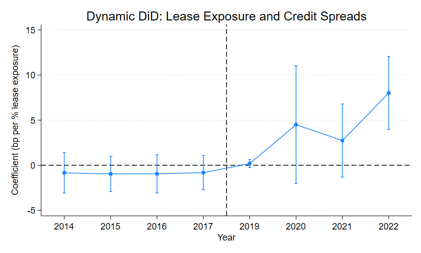
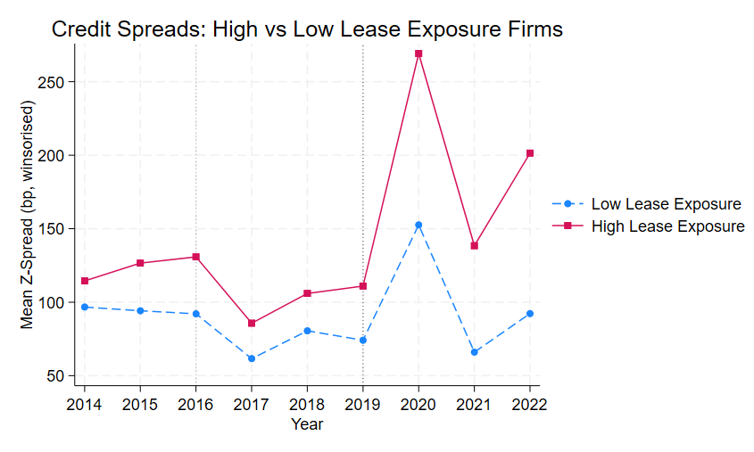

Working paper · Empirical credit research
Does Lease Capitalisation Affect Corporate Bond Credit Spreads? Evidence from IFRS 16 Adoption in Europe
Abstract
IFRS 16 accounting legislation (adopted in 2019) moved operating leases from the notes to the account onto the balance sheet, effectively increasing reported leverage for firms – especially firms that relied heavily on leasing (notably the aviation, healthcare and retail sectors). This study evaluates whether credit markets had already fully adjusted for these leases prior to the accounting reform or if recognising the lease obligations as liabilities had an observable effect on credit spreads.
To test this, 59 non-financial European bond issuers from 2014 to 2022 are compared based on their pre-IFRS 16 lease-exposure levels. A dynamic difference-in-differences design allows us to evaluate annual credit changes. The results indicate that firms with higher lease exposure before IFRS 16 adoption experience larger increases in credit spreads between 2019 and 2022 than firms with lower lease exposure, yet this reaction does not occur at announcement (2016) or adoption (2019). Instead, spreads begin to diverge between the groups from 2020 onwards. This suggests that even when an accounting change is widely anticipated, its effects on credit markets may emerge gradually rather than adjusting fully at announcement or adoption.
1. Introduction
While investors, creditors and other market participants rely on audited financial statements to assess the structure and risk of entities, it remains unclear whether changes to the way these financial reports are presented affect market pricing. In theory, if market participants have a full understanding of a firm's financial position, then changes to accounting classifications should have no effect on asset prices, as these prices already reflect all publicly available information (Fama, 1970). However, if reported financial statement data are used in risk assessment or valuation metrics, or used in financial contracts (such as debt covenants) then changes to accounting classification may affect market prices (Holthausen and Watts, 2001).
International Financial Reporting Standard 16 (IFRS 16), announced January 2016 and applied to all financial reports for annual periods beginning on or after 1 January 2019, changed the accounting treatment of operating leases. Under the previous accounting standard (IAS 17), most operating leases were not recognised as liabilities and instead were treated as 'off-balance sheet' commitments, and were therefore disclosed in the account notes. IFRS 16 changed this by requiring leases to be recognised on the balance sheet as right-of-use assets with corresponding lease liabilities (IFRS Foundation, 2016). This meant the adoption of IFRS 16 mechanically increased reported leverage and altered other key metrics, such as interest coverage, EBITDA, and total asset levels, especially in industries with substantial lease obligations (Morales-Diaz and Zamora-Ramirez, 2018).
This accounting reform is especially relevant in debt markets. IFRS 16 did not actually change firm's underlying economic obligations, it just changed how they were recognised within financial statements (IASB, 2016). However, credit investors and lenders rely on leverage, balance-sheet performance, and other key metrics to evaluate risk, and these metrics are often written directly into debt contracts (covenants) and credit assessments (Dichev and Skinner, 2002). This makes IFRS 16 a setting to analyse whether simply changing accounting classifications affects the pricing of corporate debt.
Whether any changes to corporate debt pricing exists will depend on if credit markets had already incorporated these off-balance sheet operating lease commitments into their evaluations of firm risk prior to IFRS 16. If they were, then the accounting reform should not affect borrowing costs. However, if they were not, then firms with greater operating lease exposure may experience differential increases in borrowing costs. Imhoff et al. (1991) suggest that lenders and analysts already adjust for operating lease commitments when evaluating credit risk, meaning credit market prices already incorporate these commitments into their risk assessments even when they are reported outwith the balance sheet. The third possibility is that markets do not simply react around an announcement or adoption period, but instead gradually respond to the accounting reform throughout the post-adoption period (most likely because bond covenants cannot simply be updated straight away to reflect post-IFRS 16 expectations, but instead must wait until bond maturity and refinancing).
This paper examines whether the introduction of IFRS 16 affected the pricing of corporate credit risk among European firms. Using operating lease commitment disclosures in the account notes from the final pre-IFRS 16 financial statements, the study constructs a firm-level measure of lease exposure and tests whether firms with greater reliance on operating leases before 2019 experiences a greater increase in bond spreads after the introduction of IFRS 16 compared to firms with lower reliance on operating leases. This approach isolates whether credit markets had already incorporated lease obligations into their evaluations of firm risk before they were recognised on the balance sheet.
2. Literature Review
2.1 Accounting Information and Capital Market Pricing
Under semi-strong efficiency (Fama, 1970), market prices reflect all publicly available information, meaning market participants should have already accounted for the off-balance sheet lease obligations prior to IFRS 16 and therefore market prices should be unaffected by the accounting reform. Fama (1991) found that markets already adjust for publicly available information very quickly, and therefore simply changing the layout of the accounting data should have no effect on market prices.
This is contradicted by other empirical research. Beaver (1968) found that when a firm releases earnings reports, both trading volume and price volatility increase significantly, indicating that market participants respond at announcement and therefore directly to reported figures. Ball and Brown (1968) also found that when earnings are 'unexpected' (higher or lower than forecasts), these earnings announcements are associated with abnormal returns – although much of this response occurs prior to the announcement. These studies show that accounting numbers do contribute to market changes. This is important in regard to IFRS 16 because if credit markets had already 'priced in' lease obligations under IAS 17, then the announcement and adoption of IFRS 16 should have no effect on credit spreads (the accounting reform would simply be changing the presentation of information already fully understood and adjusted for by market participants).
This is further developed by Barth, Beaver, and Landsman (2001), who show that accounting data is used by market participants in the pricing of assets: changes in earnings and book values correspond with changes in market prices. Holthausen and Watts (2001), however, argue that the statistical link between accounting numbers and market values identified by Barth, Beaver, and Landsman (2001) is not necessarily causal. Importantly, the studies agree that the statistical link exists, they only disagree on why the accounting numbers affect market values. One possible explanation for why these accounting numbers matter is that clear, reported values are easier to interpret, and therefore investors rely on them in their assumptions of firm risk, performance and ultimately valuation: the other is that investors have already fully 'priced in' information from disclosures and analysis, so new accounting information does not add any new information and simply reflect what market prices have already adjusted for.
This is even more important for debt markets than equity markets because debt markets often rely on reported metrics (such as leverage and liquidity ratios) in the risk assessment process. Dichev and Skinner (2002) show that debt covenant thresholds (such as a requirement for Debt-to-EBITDA to remain under a pre-agreed threshold, with penalties and renegotiation if this is breached) affect how firms manage these ratios, with firms clustering just under these ratios, showing that reported numbers which feed into ratios shape real outcomes. Demerjian (2011) shows that changes to accounting reforms have a real effect on the design of debt covenants as they must adjust to the new 'normal' for certain ratios. This leaves two possible expectations. The first, consistent with semi-strong market efficiency (Fama, 1970) is that investors and creditors already adjust for all accounting data irrespective of their presentation. The other is that accounting presentation affects reported metrics directly, and as these are used to assess risk and debt contracting (covenants), there is a market response to the reform. IFRS 16 provides an excellent setting to analyse this because operating leases clearly create a gap between a firm's true economic obligations compared to their on-balance sheet obligations.
2.2 Off-Balance-Sheet Financing and Lease Accounting
Before 2019, as lease commitments were only disclosed in the notes of the accounts (not on the balance sheet as liabilities) firms were able to hold large lease obligations without recognising them as debt, ultimately understating reported leverage and making financial ratios appear stronger than they actually were. Healy and Palepu (2001) show that when accounting information is listed in the account notes but not on the balance sheet, market participants may struggle to fully adjust the disclosures into true balance sheet equivalents. The issue is clearly not the fact that these lease obligations exist, but that presenting them in the notes rather than the balance sheet may affect how reliably they are accounted for in risk assessments.
Lease capitalisation studies show that moving obligations onto the balance sheet does mechanically change reported financial ratios. Imhoff et al. (1991) develop a method for estimating the present value of operating lease commitments in the note disclosures by discounting future minimum payments at an assumed interest rate, effectively converting off-balance sheet lease commitments into 'debt-like' liabilities. Their results show that capitalising leases can significantly increase leverage and reduce interest-coverage ratios for firms. Imhoff, Lipe and Wright (1997) then show that the effects of lease capitalisation are strong enough to affect commonly used performance and solvency metrics. However, whether these mechanical effects translate into market pricing is dependent on whether users had already incorporated lease obligations from footnote disclosures prior to IFRS 16 adoption. This is a question the capitalisation literature cannot answer. Bratten, Choudhary and Schipper (2013) find that market participants do not fully incorporate lease obligations disclosed only in financial statement footnotes, indicating that the processing costs identified by Healy and Palepu (2001) are consequential. This is directly relevant because disclosed lease commitments can be used to measure lease exposure before formal recognition. The treatment variable, pre-adoption lease exposure based on IAS 17 operating lease commitments, follows the same approach used in these studies.
Ely (1995) finds that when lease obligations are recognised on the balance sheet, an increase in leverage and key risk measures is observed. Beattie, Edwards and Goodacre (1998) show a similar effect, with large shifts in leverage ratios especially evident in firms with greater lease-exposure prior to the change. This is crucial for this study's empirical design – if IFRS 16 has an effect on bond pricing, the effect should be more noticeable in firms with higher pre-IFRS 16 lease exposure.
The issue for this study is whether disclosed lease commitments are incorporated completely, consistently, and at no cost. The existence of large ratio changes following capitalisation suggests they were not – if users were fully adjusting for footnote disclosures, post-recognition changes at the levels documented by Ely (1995) and Beattie et al. (1998) would not be surprising to markets. If lease obligations were fully incorporated from footnote disclosures, recognition under IFRS 16 should be irrelevant for pricing. If they were not, recognition could matter by making lease obligations easier to interpret, more comparable, or more contractible. These are two competing accounts of how accounting presentation affects market pricing, and the existing literature does not find if one account better describes how institutional credit markets processed IAS 17 disclosures than the other.
2.3 Accounting Standard Changes as Empirical Tests
Mandatory accounting reforms are a useful environment to evaluate whether changes in reporting affect market outcomes. 'Self-selection' is a main issue in voluntary disclosure studies as firms choose whether to adopt a particular reporting practice or not. Mandatory reforms, like IFRS 16, avoid this issue, as the reporting method is not chosen by managers. Daske et al. (2008) shows that firms experience, on average, liquidity and cost of capital improvements when they adopt IFRS regulation. However, the magnitude of these improvements depends on reporting incentives: studies show that the effects of accounting reforms vary across countries and firms, mainly because of different institutional environments and approaches to enforcement (De George, Li and Shivakumar, 2016; Brüggemann, Hitz and Sellhorn, 2013).
For this study, what matters is not just that accounting reforms affect markets, but that mandatory adoption provides a clean empirical setting to evaluate. Under IFRS 16, listed IFRS-reporting firms in Europe were required to apply the standard to their financial results from 2019. Because adoption was mandatory, differences in the impact of the reform across firms mainly reflect differences in lease exposure rather than voluntary adoption. This makes IFRS 16 especially useful: it imposes the same reporting change across all firms, while the expected magnitude of the change varies with pre-existing lease intensity. Mandatory adoption provides the common regulatory event, and lease exposure provides the cross-sectional treatment intensity.
The timing of the market response to reforms is also important. Markets often do not wait until formal adoption of an accounting reform to respond through prices, but often simply adjust at the announcement of the reform. For example, when the EU switched to IFRS, markets reacted at announcement in 2002 rather than at adoption in 2005 (Armstrong et al., 2010). If this applies to IFRS 16, a market response could surround the 2016 announcement rather than the 2019 adoption. If we find that spreads respond around announcement or prior to adoption, this indicates that markets adjusted for the accounting reform early. If these spreads respond from 2019 onwards, this indicates that the way in which these lease obligations are recognised in financial accounts affects market pricing. This will be tested directly using a dynamic difference-in-differences specification from 2014 to 2022.
A third possibility in regard to the timing of the market response, which is less prominent in the literature but appears nonetheless in studies, is that the market reaction to accounting reforms does not occur simply at once. Instead, they can build gradually following the adoption period as markets slowly adjust for the new reporting standards. Ball (2016) supports this view, suggesting that accounting changes are not simply 'priced in' immediately at adoption or announcement, but actually diffuse over multiple reporting cycles. This is because market participants update their models used to evaluate risk incrementally as the new, updated financial statements are released, rather than fully adjusting their models at once. This view is supported by Bansal (2023), who found little movement in cost of debt around the adoption of IFRS legislation in India, but a steady and gradual increase year on year after adoption. Similarly, Christensen, Hail and Leuz (2013) showed that the market improvements anticipated from the EU adoption of IFRS in 2005 did not occur at adoption, but only as enforcement measures strengthened over time, suggesting that markets need time to properly adapt to new reporting frameworks. First, 87% of debt contracts excluded IFRS 16 from covenant calculations at the time of adoption in 2019 (IASB Analysis), meaning there was no immediate contractual pressure on spreads at this point. This changes over time. As bonds reach maturity and are refinanced under IFRS 16 leverage metrics (refinancing from 2019 onwards), pricing gradually adjusts to account for the mechanical increases in reported leverage caused by the reform. Altogether, this third possibility has been documented before – repricing may occur gradually over the post-adoption period rather than simply at an announcement or adoption date.
2.4 Empirical Evidence on IFRS 16
Literature studying IFRS 16 is much rarer than the broader lease capitalisation literature and focuses mainly on the effects to financial ratios rather than on credit market pricing. Morales-Díaz and Zamora-Ramírez (2018) show that IFRS 16 mechanically increases reported leverage, especially in firms who operate in lease-intensive sectors such as healthcare, retail and transportation. This study found no effect on profitability, suggesting that leverage changes is the main way in which credit markets may respond to the reform. Fito, Moya and Orgaz (2013) also find that lease capitalisation significantly affects key financial ratios and reinforces the conclusion that industries with larger lease intensity experience greater changes to these ratios.
The size of the leverage effects found by Fito et al. (2013) is also relevant: if large changes to ratios were expected from the account notes under IAS 17 (and Imhoff, Lipe and Wright, 1991, show they should be expected), then credit investors should have already adjusted for lease obligations in their credit spread evaluations before 2019. But Bratten, Choudhary and Schipper (2013) find that when lease obligations are only disclosed in the notes, market participants fail to fully adjust for them in their credit assessments. This shows a gap between what market participants estimate from the account notes and what they ultimately adjust for in their models – most likely because fully adjusting for notes to the accounts is costly and difficult to implement consistently across firms. So even if the effects were predictable before 2019, they may not have been fully adjusted for in credit spread prices. IFRS 16 tests this by analysing whether moving lease obligations onto the balance sheet changed credit spread pricing, or if it simply changed the presentation of information already fully adjusted for in credit markets.
The above studies do not show whether creditors had already 'priced in' lease obligations before 2019 or if credit markets instead responded to the reform. They also focus on the effects of the reform of financial ratios (such as the increase in leverage) rather than any effects in bond markets.
2.5 Debt Market Pricing of Accounting Information
As credit market pricing is predominantly driven by leverage, solvency and covenant risk, debt markets are particularly sensitive to the way in which these measures are reported (such as the mechanical increase in leverage ratios we anticipate from IFRS 16). Anderson, Mansi and Reeb (2004) find that the quality of financial reporting directly lowers the cost of debt, and Sengupta (1998) shows that firms with more transparent accounting disclosure face lower borrowing costs – clearly stronger accounting quality improves the way in which a firm's risk is assessed by credit markets. Again, as IFRS 16 affects leverage, coverage ratios and other metrics used in covenants and risk assessments, debt markets are the preferred place to analyse the effects of the accounting reform.
2.6 Research Gap and Contribution
The literature covered points to three different expectations of how IFRS 16 should affect credit markets. The first of those is that market participants had already adjusted for lease obligations fully in their risk assessments, and therefore recognising them as on the balance sheet is simply a presentation change and will have no impact on bond spreads (Ball and Brown, 1968; Fama, 1970; Imhoff, Lipe and Wright, 1997). The second of these views is that recognising lease obligations on the balance sheet does matter, most likely because it is costly and inconsistent to fully adjust for notes to the accounts, and reported ratios such as leverage feed into risk assessments and covenant designs (Healy and Palepu, 2001; Dichev and Skinner, 2002; Demerjian, 2011; Bratten, Choudhary and Schipper, 2013). The third of these views is that the market response exists but is not immediate – instead, markets adjust gradually following adoption as risk assessments slowly reflect lease obligations more fully, and as debt matures and is refinanced at new covenant thresholds (Ball, 2016; Bansal, 2023; Christensen et al., 2013). All of these views lead to different predictions for the credit market response to IFRS 16, which we will test.
Existing studies on IFRS 16 only show that the accounting change affected reported values, such as an increase in leverage (concentrated in lease-intensive sectors), and do not test whether those changes are reflected in credit spreads. Studies of other accounting reforms internationally have also tended to focus on equity markets (particularly liquidity, valuation and cost of capital) rather than debt pricing. This means there is no firm-level studies analysing how European credit spreads responded to the IFRS 16 accounting reform.
This gap is notable because leverage is central to how creditors assess risk and structure debt covenants – if IFRS 16 mechanically increases leverage, this may change how creditors assess a firm's risk even if the actual debt obligations have not changed. It also matters methodologically because IFRS 16 offers an unusually clean setting as all IFRS firms had to recognise leases on the balance sheet, and the impact of the reform varies across firms depending on how heavily they relied on operating leases prior to adoption. It matters contextually for European listed firms, too, as they all adopted IFRS 16 under a common regulatory regime, yet differed significantly in their reliance on operating leases. There are no firm-level studies using European corporate bond spreads that combines mandatory IFRS 16 adoption with variation in lease exposure to test whether credit markets responded to the recognition of lease liabilities.
This study will not attempt to simply re-document the leverage effects of IFRS 16, or just show that accounting presentation affects debt markets. Instead, it will test whether firms with greater lease-exposure prior to IFRS 16 experienced larger changes in credit spreads following the reform when compared to firms with lower lease-exposure prior to IFRS 16. It will also test when any response (if one is found to exist) occurred: around the announcement in 2016, adoption in 2019, or gradually over time following adoption.
2.7 Hypothesis Development
The literature reviewed has identified three competing theories of how the adoption of IFRS 16 should affect corporate bond markets, but it fails to resolve the empirical question on theoretical grounds alone. Therefore, the following hypotheses are developed to test these competing views.
H1: IFRS 16 adoption mechanically increased reported leverage to a greater extent for firms with higher pre-adoption operating lease exposure than for firms with lower exposure.
H1 established that IFRS 16 did change leverage materially for firms, especially for those in lease-intensive industries. Morales-Díaz and Zamora-Ramírez (2018) already show that this occurs due to IFRS 16, and therefore this is simply a validation step. If firms with higher pre-adoption lease exposure are found to not experience larger increases in reported leverage, we cannot cleanly interpret our findings for H2 and H3. If a positive effect is found for high-exposure firms across net debt-to-EBITDA, debt-to-assets and interest coverage, we can confirm that IFRS 16 did indeed generate the accounting shock we must document in order to interpret bond spread results.
H2: Firms with greater pre-adoption operating lease exposure experience larger increases in corporate bond credit spreads following IFRS 16 adoption than firms with lower exposure.
H2 tests whether firms with greater lease-exposure pre-2019 experienced larger increases in credit spreads than firms with low lease-exposure following the reform. We may find that lease obligations had already been 'priced in' fully by market participants, and that IFRS 16 does not affect credit spreads at all. A null result would confirm this view. We may find instead that lease obligations were not fully accounted for in risk assessments, and that IFRS 16 did lead to credit spread effects that were more noticeable for firms with larger lease-exposure before 2019. A positive coefficient on the exposure × post interaction confirms this view.
H3: Any differential credit spread response for high-exposure firms is concentrated around the IASB's publication of IFRS 16 in January 2016 rather than at the formal adoption date of January 2019, or emerges gradually throughout the post-adoption window.
If credit markets are efficient, repricing should occur when IFRS 16 was announced in 2016 rather than when it formally took effect in 2019. Armstrong, Barth, Jagolinzer and Riedl (2010) show that equity markets reacted to IFRS adoption announcements before implementation, consistent with this view. Applied to IFRS 16, this suggests that focusing only on the 2019 adoption date may miss part of the adjustment if markets began incorporating the reform once the standard was published in 2016. Alternatively, repricing may occur as a delayed and gradual response during the post-adoption window (Ball, 2016; Bansal, 2023; Christensen et al., 2013).
Using the dynamic Difference-in-differences model allows us to study the timing of the response and therefore distinguish between the three possibilities we have laid out.
RQ1: Did firms with greater pre-adoption operating lease exposure experience higher rates of credit rating deterioration following IFRS 16 adoption?
This is treated as descriptive rather than causal. IFRS 16 was first reflected in the 2019 financial statements for all sample firms, which was before the COVID shock. However, credit rating changes observed after the adoption may extend into 2020 and therefore be contaminated by the COVID shock. As COVID affected firms with greater lease-exposure (notably airlines, hospitality and retail), we cannot cleanly separate credit rating changes driven by economic conditions from ones driven by the IFRS 16 accounting reform.
This means that the credit rating analysis is interpreted descriptively. The primary tests of market pricing in this paper instead rely on the bond spread analysis in H2 and H3, where the timing of spread movements can be examined more directly around the reform period.
3. Methodology and Data
The methodology chapter describes the empirical approach, variable construction, and data sources used to test the hypothesis discussed in section 2.7.
3.1 Sample Construction
The sample of firms is restricted to non-financial, IFRS-reporting European corporate groups with observable EUR-denominated bond market pricing from 2014 to 2022 (this was filtered using DataStream via Eikon's EUR corporate bonds universe). The firms are included in the sample subject to six criteria.
First, the issuing entity must be a non-financial IFRS-reporting group listed on a European exchange. Financial firms are excluded from the sample because they have unique capital structures, changing the way IFRS 16 affects leverage and contaminating the sample. Naturally, only IFRS-reporting firms are affected by the accounting reform, so firms reporting under other standards, such as GAAP, are excluded (as we are focusing on European markets, this criterion did not exclude any firms alone). Entities that act as investment vehicles, state foundations, public utilities, private companies, or have unlisted parent companies, are excluded as they are either not commercially motivated corporate borrowers or lack the credit data the study requires. One firm is also excluded due to bankruptcy proceedings. These filters remove 44 entities from the original sample of 126: 16 investment vehicles, 11 firms with unlisted parents, 11 private companies, 3 public utilities, 1 non-IFRS reporter, 1 state foundation, and 1 bankrupt firm.
Second, each firm must have at least one EUR-denominated plain vanilla fixed coupon bond, with a minimum issue size of EUR 250 million. Restricting to only EUR-denominated firms, we eliminate currency-driven variation in spreads. This removed two more firms from the sample (one NOK-denominated and one SEK-denominated). The threshold of EUR 250 million assures that the sample has adequate secondary market liquidity and composite pricing availability.
Third, IAS 17 operating lease commitments must be disclosed for each firm in its 2018 annual report.
Fourth, eight firms that chose to adopt IFRS 16 prior to the 2019 accounts are excluded.
Fifth, bonds issued through financing subsidiaries are consolidated at the economic parent, with bond issuer names grouped under the parent's name (for example, Deutsche Lufthansa AG, and Lufthansa, are treated as the same bond issuer).
Finally, firms must have sufficient bond spread data to construct at least one annual Z-spread or Asset Swap Spread observation. Thirteen firms that met all other criteria are excluded on this basis.
This leaves a final sample of 59 firms spanning eight countries and eight sectors, summarized in table 1. As the panel spans 2014 to 2022, there are 531 firm-year observations, subject to spread data availability.
| Country | Firms | Sector | Firms |
|---|---|---|---|
| France | 43 | Industrials & Capital Goods | 16 |
| Germany | 7 | Automotive & Aerospace | 9 |
| Belgium | 5 | Consumer Retail & Luxury | 8 |
| Netherlands | 2 | Energy, Utilities & Infrastructure | 8 |
| Austria | 2 | Healthcare & Pharma | 7 |
| Italy | 2 | Technology & Business Services | 6 |
| Travel, Leisure & Transport | 6 | ||
| Telecom & Communications | 3 | ||
| Total | 59 | Total | 59 |
3.2 Identification Strategy
The identification strategy for the study is based on the regulatory shock of IFRS 16, but uses differences in pre-adoption lease exposure across firms, which follows the difference-in-differences logic of Daske et al. (2008) for mandatory accounting reforms. IFRS 16 became mandatory for all IFRS-reporting firms from 1st January 2019, giving a common treatment date for the study. What varies is the scale of the accounting shock – this is dependent on the degree that firms relied on operating leases relative to total assets prior to the accounting reform. Firms with higher lease commitments pre-adoption should experience greater increases in reported leverage from 2019. The empirical design then exploits how these differences in exposure 'play out' post-adoption (Angrist and Pischke, 2009).
Therefore, the analysis compares how credit spreads change over the period for firms with different levels of lease exposure. If it finds that firms with higher pre-adoption lease exposure experience larger changes to credit spreads following the reform when compared to low-exposure firms, we can attribute this to the accounting change rather than simply generic market movements affecting all firms. This design is a difference-in-differences approach, which has been used as the primary method in mandatory accounting reform studies (Daske et al., 2008; Angrist and Pischke, 2009).
For this DiD design to actually work, all sample firms (regardless of classification as high or low-lease exposure) must have similar credit spread trends prior to IFRS 16 adoption. We test this using pre-trend coefficients from the dynamic DiD. If spreads were already diverging between the two groups prior to 2019 (i.e. the pre-trend coefficients are significant), then we cannot cleanly attribute spread changes to the accounting reform. If we find that the groups remained similar (i.e. the pre-trend coefficients are insignificant), then there is no problem (Autor, 2003).
There is also the possibility that markets started reacting to the accounting reform when IFRS 16 was announced in January 2016, not just when it was adopted in 2019. As Armstrong et al. (2010) found, equity markets have previously reacted to IFRS reforms around the announcement, not just adoption. If credit markets began to 'price in' lease commitments from the announcement period, most of the market repricing would occur in the 2016-2018 period, rather than 2019. The static difference-in-differences is still reported, but mainly as a lower bound, while the dynamic specification provides the main results.
The baseline analysis includes both firm and year fixed effects to control for firm-specific differences (such as industry and baseline leverage), and movements in credit markets affecting all firms (such as European central bank policy 2022 or the COVID credit shock in 2020), preventing the results from being skewed by credit spread movements caused by economy-wide shocks (Wooldridge, 2010). This leaves us with variation that simply reflects how within-firm changes in credit spreads differ with pre-IFRS 16 lease exposure levels.
Standard errors are 'clustered' at firm level throughout. Because each firm appears nine times in the panel (once per year) observations within a firm are not independent of each other. If the study were to treat all 531 observations as separate pieces of information, the standard errors would be artificially small and overstate the confidence in the results (Petersen, 2009). Clustering at the firm level corrects this, and it is the standard approach where treatment is assigned at the firm level (Bertrand, Duflo and Mullainathan, 2004; Gow, Ormazabal and Taylor, 2010).
3.3 Treatment Variable: Lease Exposure Ratio
The study's treatment variable, Lease Exposure Ratio, is defined as:
Lease Exposure Ratio = Operating Lease Commitments / Total Assets
Both figures are taken from the FY2018 annual report (IAS 17 regulation). The variable is constructed once per firm and fixed across all nine panel years.
Lease exposure is fixed at FY2018 because the size of the shock caused by IFRS 16 is dependent on lease commitments that were already in place before the standard was adopted in 2019. If the study let the variable 'update' each year, we would be explaining the market response caused by IFRS 16 with a variable that already reflects IFRS16, making the analysis redundant (Daske et al., 2008; Roberts and Whited, 2013). Discounting lease commitments to a present value would require us to assume a borrowing rate per firm. Therefore, we simply use the raw, undiscounted figures taken directly from the IAS 17 note to the accounts, keeping the measure consistent across firms (Imhoff, Lipe and Wright, 1991). However, using undiscounted lease commitments introduces some measurement error relative to the true economic liability, which may bias estimated effects toward zero. The study also utilises two robustness checks, both fixed to 2018:
Lease Exposure = Operating Lease Commitments / Total Debt
Dividing by total debt tests whether results hold when lease exposure is measured relative to existing financial obligations, rather than asset size.
Lease Exposure = Operating Lease Commitments / Revenue
Dividing by revenue measures exposure relative to how large the firm's operations are.
If all three of these variables show similar findings, it suggests the results are not just a product of how the variable was constructed.
3.4 Primary Outcome Variable: Bond Z-spread
The main outcome variable is Z-spread per year per firm, found using composite bond pricing data from DataStream. Z-spreads were chosen over credit default swaps as CDS data is very limited for European corporate issuers, and also reflect agency assessments on firm risk (and these agencies stated that they already accounted for lease obligations prior to the reform), rather than solely market pricing. Z-spread measures the yield a bond pays above the risk-free rate and is used as the main 'proxy' for credit risk in most credit spread studies (Campbell and Taksler, 2003). While we debated other measures (notably Option adjusted Spreads, I-spreads and G-spreads), Z-spreads had the most coverage in the EUR bond market. Asset swap spreads are used as a robustness check to ensure the results are not determined simply by the credit spread measure selected (Longstaff, Mithal and Neis, 2005).
Each firm in the sample has at least one bond outstanding during the period, ranging from 1 to 56, with a mean of 9.8 bonds per firm. A bond is active if it was issued before or during that year and matures after that year. For each firm-year, the average spread is taken across all active bonds, weighted by EUR amount issued at issuance. Weighting by issue size means that larger, more liquid bonds, whose spreads are more reliably measured and more representative of market pricing than smaller less traded issues, carry greater weight (Bessembinder, Kahle, Maxwell and Xu, 2009; Dick-Nielsen, Feldhütter and Lando, 2012).
DataStream provides monthly composite pricing for each of 880 bonds. For a bond-year to be included in the sample, at least three monthly observations must be available (less than three may provide an unreliable idea of the bond's pricing).
DataStream Z-spread coverage may be notably thinner in 2014 and 2015 when compared to the rest of the years in the study. If coverage in these years is too low (less than 30 out of 59 firms for each year), then the sample may become unrepresentative – especially as firms with thinner coverage in these years are likely to be smaller, less liquid firms with low lease exposure. If the above threshold is not reached per year, then 2016 will be used as the beginning of the pre-treatment period.
3.5 Mechanism Variables and Accounting Controls
Accounting data from 2014-2022 for all firms is from Capital IQ. The study uses three mechanism variables, each as a dependent variable in the regressions.
Net debt to EBITDA: IFRS 16 pushes EBITDA up as operating lease expense is reclassified as depreciation and interest (it is no longer below the EBITDA line). At the same time, the lease liability is recognised on the balance sheet, increasing net debt by the present value of future lease payments. Both move in the same direction, implying deterioration in the ratio for lease-exposed firms (Morales-Díaz and Zamora-Ramírez, 2018).
Debt to assets: The adoption of IFRS 16 means both right-of-use assets and lease liabilities are recognised on the balance sheet, so both sides of the ratio increase. As they partially cancel out, the net effect on debt to assets is difficult to predict.
Interest coverage: IFRS 16 raises interest expense and reduces EBIT, meaning the ratio deteriorates for firms with greater pre-IFRS 16 lease exposure.
As net debt, total assets, and EBITDA are all directly affected by IFRS 16, especially for firms with greater lease exposure, using them would mean controlling for something being affected by the accounting reform (Angrist and Pischke, 2009; Wooldridge, 2010), so they are excluded as controls. Therefore, the spread regressions use only firm and year fixed effects.
3.6 Credit Rating Data
Credit rating data for all 59 firms is gathered from DataStream, is based on the S&P long-term issue ratings (ratings range from D to AAA), and is recorded as of 31st December per year. The study derives three variables from these credit ratings. The first of these is a numeric score, which runs from AAA =1 to D=22. The second is the yearly change in this numeric score (score t – score t-1). The last is a binary indicator which equals one in years where the credit score deteriorates. These variables are only used for the descriptive analysis of RQ1 and are not used in any core regressions.
3.7 Regression Specifications
All regressions are completed in Stata using 'xtreg' with the 'fe' option, which controls for firm fixed effects. Year fixed effects are added as indicator variables using the 'i.year' function. For the main spread regressions, p-values are derived from the wild cluster bootstrap using 'boottest' with 9,999 repetitions, providing reliable inference under a finite number of clusters (Cameron, Gelbach and Miller, 2008). Statistical significance is assessed at the usual 1%, 5% and 10% thresholds, and within R-squared is reported as this is the relevant measure for fixed effects estimation.
3.7.1 Mechanism Regressions (H1)
LeverageRatioit = αi + γt + β(Lease_Exposure_Ratioi × Postt) + εit (1)
This regression is run once with net debt to EBITDA as the dependent variable, then again using debt to assets, and then finally using interest coverage. All three regressions use firm and year fixed effects only, with no time-varying controls, for the same reason as in section 3.6 – post-adoption accounting figures are affected by IFRS 16 and including them would partially explain away what the study is testing (Wooldridge, 2010). β captures how much leverage changed for high-exposure firms relative to low-exposure firms after 2019. If this does not return a positive and significant result, the spread results are harder to interpret, as there would be no confirmed leverage shock to have affected markets.
3.7.2 Dynamic Difference-in-Differences (H2 and H3)
Spreadit = αi + γt + Στ[βτ(Lease_Exposure_Ratioi × Yearτ)] + εit (2)
2018 is set as the base year for the dynamic DiD, which means that coefficients for all other years show whether the gap in spreads between high and low exposure firms was wider or narrower than it was in 2018 (Autor, 2003). Spreads that only start to widen from 2019 onwards would suggest that markets reacted when IFRS 16 was adopted in 2019, supporting H2. If this widening occurs in 2016 or 2017, it would indicate that markets started reacting to IFRS 16 following its announcement, not its adoption, supporting H3. If coefficients are statistically insignificant throughout, it indicates that lease obligations had already been 'priced in' by market participants before any change to the way they were reported, though this may also reflect measurement error in the treatment variable as discussed in section 2.7.
3.7.3 Static Difference-in-Differences (H2)
Spreadit = αi + γt + β(Lease_Exposure_Ratioi × Postt) + εit (3)
The static specification here provides a single average estimate of how spreads differ between high and low exposure firms in the post-adoption period. As it only focuses on the post-adoption period, any repricing effect between 2016 and 2018 is not covered (although as we will discuss in results, this is not a problem for our study). Several checks to verify this specification are done and are covered in section 3.9.
3.7.4 Credit Rating Descriptive Analysis (RQ1)
IFRS 16 was mandatory for annual periods beginning on or after 1 January 2019, meaning the first accounts reflecting the standard were published on 31 December 2019 or in early 2020, just as COVID-19 began affecting markets. Any rating changes in response to the new balance sheets would have played out through 2020, by which point COVID was already hitting lease-intensive sectors hard. Two things are looked at: how often high and low exposure firms were downgraded each year from 2016 to 2022, and how many firms were downgraded in the twelve months after their first IFRS 16 annual report was published. This analysis is descriptive rather than causal.
3.8 Robustness Checks
Six robustness checks are run against the core regressions outlined in section 3.7.
Lease exposure: total debt and revenue respectively will both be run as the lease exposure variable in place of total assets. If results are consistent across all of these measures, they are not driven by denominator choice (De George, Li and Shivakumar, 2016).
ASW: The regressions are tested using Asset Swap Spread in place of Z-spread. ASW measures the spread above the interest rate swap curve, while Z-spread measures the spread above the government bond curve – the two measures should move closely together for EUR-denominated corporate bonds. If ASW results align with Z-spread, this confirms the findings are not due to the spread benchmark used (Longstaff, Mithal and Neis, 2005). ASW is applied to both the static and dynamic specifications.
Placebo test: this will be run using a placebo treatment year of 2016 (rather than the real treatment year of 2019), and using only accounting data from 2014-2018 (2014 and 2015 act as the 'pre-adoption' period, 2016 is the placebo treatment year and is excluded from the post-period, and 2017 and 2018 as the 'post-adoption' period). If the empirical design is strong, the placebo coefficient should be statistically insignificant (Bertrand, Duflo and Mullainathan, 2004).
COVID-19: The most lease-intensive sectors are healthcare, travel, hospitality and retail – the sectors most affected by COVID-19. This means that credit spread changes from 2020 onwards may reflect pandemic risk rather than IFRS 16, misrepresenting the effect of the accounting reform. To account for this, the regressions are re-run excluding 2020, and then excluding both 2020 and 2021. A separate estimate restricting the post-period to 2019 only is also reported (Demers, Hendrikse, Joos and Lev, 2021). Finally, spreads are winsorised at the 1st and 99th percentile to confirm that results are not driven by extreme observations concentrated in pandemic-affected firms (Leone, Minutti-Meza and Wasley, 2019), though this also addresses non-COVID outliers present in the data (such as unusual spreads following an accounting scandal in 2022 for firm Emeis).
Sector-specific trends: Lease exposure is not even across sectors, and different sectors can face vastly different credit conditions and headwinds at the same time. This creates a risk that spread differences may be coming from sector shocks, not IFRS 16. The regression will therefore be re-run with sector-by-year fixed effects, rather than standard year fixed effects (Gormley and Matsa, 2014). As our regression sample consists of 59 firms, sector-year cells are thinly populated, standard errors inflate materially, and this check is best read as a directional sensitivity test rather than a formal test of statistical significance.
4. Results and Analysis
4.1 Sample Overview and Descriptive Statistics
The final sample consists of 59 firms, all observed annually from 2014 to 2022. Z-spread coverage in 2014 is 51 firms, and 2015 is 52 firms – these are both comfortably above the threshold set out in section 3.4, and therefore both years are retained, and the pre-period starts at 2014. The missing coverage means we are left with 504 Z-spread observations. The dependent variable is the firm-level Z-spread, calculated as a value-weighted average across bonds using EUR issuance weights.
The mean Z-spread is 116bp, with a median of 75bp, indicating a right-skewed distribution. The mean lease exposure ratio is 7.04%, with a median of 3.38% and a range from 0.08% to 57.11%. Z-spreads have large variation both within firms (87bp) and across firms (95bp), supporting the use of fixed effects. Lease exposure is found to be positively related to both Z-spreads and reported leverage: the correlation with Z-spreads is 0.25 and statistically significant, while the correlation with debt-to-assets (pre-adoption) is 0.21, indicating that firms with higher lease exposure were more leveraged than low-lease exposed firms before IFRS 16 and confirming H1. 73% of firm years have observable credit ratings, with the missing values due almost entirely to firms unrated throughout the period.
| Mean | Median | SD | Min | Max | N | |
|---|---|---|---|---|---|---|
| Panel A: Spread Variables | ||||||
| Z-spread (bp) | 116.45 | 75.02 | 127.24 | 16.36 | 900.84 | 504 |
| ASW spread (bp) | 113.15 | 75.36 | 102.05 | 13.08 | 556.47 | 505 |
| Panel B: Treatment Variable | ||||||
| Lease Exposure Ratio (%) | 7.04 | 3.38 | 10.98 | 0.08 | 57.11 | 531 |
| Panel C: Mechanism Variables | ||||||
| Net Debt / EBITDA (×) | 2.59 | 1.89 | 5.88 | 28.62 | 77.00 | 528 |
| Debt to Assets | 0.317 | 0.279 | 0.173 | 0.015 | 1.020 | 528 |
| Interest Coverage (×) | 13.02 | 7.23 | 27.76 | 16.56 | 464.00 | 525 |
| Panel D: Credit Ratings | ||||||
| Rating Score (1=AAA, 22=D) | 8.74 | 8.00 | 2.44 | 3.00 | 17.00 | 386 |
Spread variables in basis points. Standard errors in parentheses. * p<0.10, ** p<0.05, *** p<0.01.
4.2 Mechanism Regressions: Did IFRS 16 Increase Reported Leverage? (H1)
We must first show that IFRS 16 increased reported leverage – if the reform did not change financial ratios, there is no reason for credit spreads to respond whatsoever. This mechanical leverage increase is predicted by Morales-Díaz and Zamora-Ramírez (2018). As leverage is the dependent variable, only year fixed effects are included, because adding further balance sheet controls would absorb part of the effect being estimated.
Debt-to-assets (Regression 1b) provides the clearest result in support of a mechanical leverage change. The coefficient of 0.0038 (p < 0.001), implies that a one percentage point increase in pre-adoption lease exposure raises debt-to-assets by 0.38 percentage points following IFRS 16 adoption. At the mean lease exposure of 7.04%, this is equivalent to an increase in debt-to-assets from 31.7% to about 34.4%.
Net debt-to-EBITDA (Regression 1a) shows a coefficient of 0.039 (p = 0.012, within R² = 0.085). IFRS 16 increases net debt as lease liabilities are recognised on the balance sheet, while EBITDA also rises as operating lease expenses are reclassified and replaced by depreciation and interest. Both effects mechanically increase the ratio, consistent with Morales-Díaz and Zamora-Ramírez (2018).
Interest coverage (Regression 1c) gives a coefficient of -0.127, indicating a decline in coverage following IFRS 16. However, the estimate is not statistically significant (p = 0.206), showing there is no evidence of an effect on interest coverage. The most likely explanation is that EBIT is volatile year-to-year, with losses during 2020–2021 introducing substantial noise, particularly for lease-intensive firms.
Two of the three specifications are statistically significant, indicating that IFRS 16 increased reported leverage for lease-exposed European firms. This establishes the mechanism for a potential credit spread response and supports H1. Results are reported in Table 3.
| (1) Full Post | (2) 2019 Only | (3) Binary Split | |
|---|---|---|---|
| Bond Z-spread (bp) | Bond Z-spread (bp) | Bond Z-spread (bp) | |
| Lease Exposure × Post | 4.421*** (1.636) | 0.177 (0.259) | — |
| High Lease × Post | — | — | 52.02** (24.74) |
| Firm FE | Yes | Yes | Yes |
| Year FE | Yes | Yes | Yes |
| Post period | 2019–2022 | 2019 only | 2019–2022 |
| N | 504 | 327 | 504 |
| Within R² | 0.248 | 0.128 | 0.211 |
Standard errors in parentheses. * p<0.10, ** p<0.05, *** p<0.01.
4.3 Dynamic Difference-in-Differences: Timing of the Credit Market Reaction (H2 and H3)
The dynamic DiD is used to analyse how changes to credit spread evolves each year throughout the period. This is crucial for the study because it allows us to evaluate whether credit spreads respond immediately in 2019, or build gradually each year from 2019 to 2022 (if these spreads move at all).
The parallel trends test specified in section 3.2 proves there are no differences in credit spreads between high and low-exposure firms between 2014 and 2017. The coefficients for these years are (between -0.96 and -0.82bp), all statistically insignificant (the joint test confirms this). While this is consistent with parallel trends, we must treat these results cautiously because only 59 firms and four pre-treatment years, the results may have limited power (small differences could go undetected) (Roth, 2022). Spreads for both high and low lease exposed groups fall in the pre-period, reflecting the compression of credit markets throughout ECB quantitative easing policy. They then rise again in 2018.
In the post-adoption period, there is no immediate response to the accounting reform – estimates from 2019 to 2021 are all statistically insignificant (between +0.18bp and +4.49bp), but 2022 results increase sharply to +8.01bp (p < 0.001). A joint test across the post-period coefficients is not significant (F(4,58) = 9.74, p = 0.181), indicating that the effect is not evenly distributed across years in the post-period (Bertrand et al., 2004, show that a joint test may lack power in a dynamic DiD of only 59 firms). The static DiD (discussed in detail in section 4.4) avoids this power issue by simply estimating a single post-adoption effect, which is significant (p = 0.003 using the wild cluster bootstrap). Together, these results clearly point to a post-adoption credit spread change that gradually builds from 2019 to 2022.
In 2021, credit spreads for all firms fell drastically as markets normalised in the aftermath of COVID disruptions. Low-exposure firms dropped to 66bp (down from their 2018 level of 81bp), while higher exposure firms also dropped but remained at 138bp. In 2022, the gap between the groups widens sharply to 8.01bp, explained due to the ECB rate hikes which placed greater pressure on firms with higher reported leverage – high-lease exposed firms.
Ultimately, H3 is not supported. Pre-period coefficients are near zero throughout 2016-2017 with no evidence of IFRS 16 repricing. H2 is supported over the full post-adoption window, but the effect appears with a delay and not immediately at adoption in 2019.
There is no immediate response in 2019, but this is likely explained by the fact that 87% of debt contracts excluded IFRS 16 from their leverage calculations (IASB), so there was no immediate contractual pressure on spreads. As bonds matured and were refinanced from 2019 to 2022, issuances were written based on post-IFRS 16 leverage metrics, and higher reported leverage was 'priced in' gradually. This contractual delay was documented following IFRS adoption by Florou and Kosi (2015). Furthermore, Ball (2016) shows that accounting changes diffuse through markets over multiple reporting cycles, rather than being absorbed in a single response. Furthermore, Moody's and S&P both said that at adoption, their credit ratings would be unaffected as their models already accounted for off-balance sheet obligations, but quietly shifted their own capitalisation estimates - Moody's 8x rent multiple, S&P's blanket 7% discount rate – to reflect the reported IFRS 16 numbers. Kraft (2015) shows these capitalisation estimates were simply rough approximations, explaining why the models and subsequent credit ratings had to be gradually adjusted during the post-adoption window. The strongest empirical precedent for delayed capital market effects from mandatory accounting reform is Christensen, Hail and Leuz (2013), who find that benefits from the 2005 EU IFRS adoption did not appear at adoption, but as enforcement subsequently strengthened - market participants needed time to develop the infrastructure to properly incorporate the new information. Results are in Table 3 and Figure 1.

Notes: Coefficients on year × lease exposure interactions; 2018 omitted. Whiskers denote 95% confidence intervals clustered at the firm level.
4.4 Static Difference-in-Differences: Summary Estimate of the Treatment Effect (H2)
The static DiD, by its very nature, provides a single estimate of the average post-adoption effect. As we have shown there is no pre-adoption spread response whatsoever, this static DiD covering only the post-adoption period still gives a clean estimate of how spreads were affected by IFRS 16.
Regression 3a's (full post 2019–2022) coefficient of 4.42bp (bootstrap p = 0.003) is significant at the 1% level. The bootstrap p-value is marginally more significant than the conventional clustered standard error result. While this is unusual (the bootstrap is typically more conservative), it most likely reflects issues with conventional standard errors when cluster sizes are uneven, which is why the bootstrap was pre-specified as the main inference method (Roodman et al., 2019). The increase in spreads from IFRS 16 is larger for firms with higher lease exposure, which is right-skewed (mean 7.04%, median 3.38%, p90 16.92%). This is an increase of 31bp for the average firm, and at the 90th percentile it rises to around 75bp – firms at the top of the lease-exposure distribution (notably in healthcare, airlines and retail) face borrowing costs 75bp higher than low-lease firms following IFRS 16 adoption. This is not dissimilar with the 55bp spread differential documented by Altamuro et al. (2014) under IAS 17.
Regression 3b (where the post-period is set to 2019 only) returns a coefficient of 0.18bp (bootstrap p = 0.470) – this is insignificant. It is therefore clear that there is no immediate repricing of credit at IFRS-16 adoption, in line with Bratten, Choudhary and Schipper (2013) who anticipated that markets would have already adjusted for lease obligations before adoption and there would be no 2019 credit response.
Regression 3c (binary high/low split) gives a coefficient of 52.02bp (bootstrap p = 0.029), significant at the 5% level. The average lease exposure above the median is 13.1%, which implies an effect of around 58bp under the continuous specification – very similar to the directly estimated 52bp. As the two approaches show very similar results, it indicates that the findings are not just sensitive to the way in which lease exposure is measured.
Figure 2 shows a clear widening in spreads after IFRS 16. Throughout the pre-adoption period, the gap is relatively stable, averaging 27.8bp from 2014 to 2018. After 2019, it increases sharply, reaching 116.6bp in 2020 and remaining elevated thereafter, with a post-adoption average of 83.8bp (roughly three times the pre-adoption level). Interestingly, in 2021 low-exposure firms fall to 66.1bp, below their pre-pandemic 2018 level of 80.6bp, while high-exposure firms remain elevated at 138.4bp, indicating that high-lease firms carry a post-IFRS 16 leverage premium that appears to slow credit market normalisation (Lim, Mann and Mihov, 2017).

Notes: Vertical line = IFRS 16 adoption (2019); spreads winsorised at 1st/99th percentiles.
4.5 Robustness Checks
All robustness checks support our main findings.
To ensure COVID is not driving the result, we exclude 2020 from the post-period. This is an important check because sectors with high-lease exposure (namely retail, airlines and hospitality) are also the exact same industries most affected by the pandemic. Interestingly, when we exclude 2020 the estimate actually strengthens to 3.69bp (bootstrap p = 0.002). When we then exclude both 2020 and 2021 the estimate is 3.65bp (bootstrap p = 0.005) – both of these results are highly significant. This means we can effectively rule out the results being driven by COVID effects.
To ensure that the 2022 ECB rate hikes are not driving the result (which, again like COVID are more likely to affect firms with high leverage and high lease-exposure), we estimate excluding 2022 from the post period. The coefficient does fall slightly to 3.51bp (bootstrap p = 0.044), but remains statistically significant at the 5% level. This suggests that while 2022 undoubtedly contributes to the precision of the estimate, it is not driving the result. In fact, the only year-exclusion of the post-period that was insignificant was the 2019-only model (p = 0.470), which reflects the delayed response discussed in Section 4.3.
Year fixed effects are replaced with sector-year fixed effects in order to absorb time-varying shocks at the industry level. This had little effect whatsoever on the coefficient - 4.12bp (bootstrap p = 0.008), very close to the baseline estimate of 4.42bp. This suggests the result is not driven by sector-level shocks, including differential COVID exposure across industries.
The next check is the placebo test with a fictitious treatment date of 2016 and the sample restricted to 2014-2018. This gives a coefficient of 0.067bp (bootstrap p = 0.780), which is statistically insignificant. A significant placebo would have been fatal to the identification strategy (Bertrand et al., 2004).
The next check is switching from Z-spread to Asset Swap Spread. The ASW static DiD gives 2.85bp (bootstrap p = 0.010), which is directionally consistent with the Z-spread result and statistically significant at the 5% level. The dynamic DiD shows broadly similar pre-trends, with a small deviation in 2015. Altogether, this shows the result is not specific to Z-spreads.
The next is using alternative denominators in replace of total assets. Using total debt gives 113.4bp per unit (bootstrap p = 0.018), and total revenue gives 122.7bp per unit (bootstrap p = 0.018). All three denominators produce significant results, proving the finding is not driven by the choice of denominator.
The final check is winsorising at the 5th and 95th percentiles to ensure the findings are not skewed by outliers. Under 5/95 winsorisation the coefficient falls to 2.12bp (bootstrap p = 0.012), smaller than the baseline (as expected) but still significant at the 5% level. It should be noted that Leone, Minutti-Meza and Wasley (2019) establish that 1/99 is the appropriate baseline and 5/95 is the appropriate robustness check.
4.6 Credit Rating Descriptive Analysis (RQ1)
The credit rating analysis is descriptive only, as the 2020 COVID shock makes a causal link between post-2019 rating changes and IFRS 16 adoption impossible.
In 2019 (the first post-IFRS 16 year and the last year unaffected by COVID) high-exposure firms were downgraded at a rate of 10.5%, compared to only 4.2% for low-exposure firms – this is 2.5 times higher. Across 2019-2020, 15 firms were downgraded in total: 9 high-exposure (60%) and 6 low-exposure (40%), despite high-exposure firms only accounting for 49% of the sample. The 2020 overall downgrade rate of 27.9% is undoubtedly influenced by the pandemic, and therefore cannot be attributed to IFRS 16 cleanly.
One explanation as to why high-exposure firms are downgraded at a higher rate than low-exposure firms is that IFRS 16 changes how lease liabilities are measured. Under IAS 17, rating agencies applied their own adjustments to operating leases – IFRS 16 forces firms to estimate these liabilities themselves. These estimates can differ from the standard approaches used by agencies, such as Moody's 8x rent multiple or S&P's fixed discount rate. This means the reported numbers are not the same as the adjustments agencies were using before, which can lead to rating changes.
A similar pattern to this is shown by Basu and Naughton (2020), who find that recognising pension liabilities under SFAS 158 led to rating changes even though agencies had already been adjusting for them.
This evidence is descriptive and supports the interpretation of the spread results, rather than providing separate causal evidence. Full tabulations are presented in the accompanying tables.
5. Conclusion
5.1 Summary of Findings
H1 is clearly supported: our mechanism regressions find that IFRS 16 significantly increased reported leverage more for firms with high lease-exposure compared to low lease-exposure pre-2019. For debt-to-assets, the coefficient is 0.38 (p < 0.001), which is an 8.5% increase for the average firm in the sample. This, and Net debt-to-EBITDA (p = 0.012), show that the accounting reform had a large impact on reported leverage.
The results from the dynamic DiD show that the parallel trends assumption holds – there are no significant differences in spreads from 2014 to 2018 between high and low lease exposed firms. Following the 2019 adoption, spreads between the two groups actually diverge gradually. There is no change in 2019, but an increasing difference each year from 2020 to 2022 (with the exception of 2021). The static DiD gives a post-period estimate of 4.42bp (bootstrap p = 0.003), which is equivalent to an increase of 31bp for the average firm, and a 75bp increase at the top of the exposure distribution (similar results were confirmed when we split firms into high and low exposure groups). Overall, H2 is supported over the full adoption period, while there is no evidence in support of H3.
When we exclude COVID years, our results are actually strengthened: removing 2020 gives 3.69bp (p = 0.002), and excluding both 2020 and 2021 gives 3.65bp (p = 0.005). The only result that was weaker compared to the original was when we excluded 2022 to check for any contamination from the European Central Bank rate-hikes – this result remained significant at the 5% level (p = 0.044).
The descriptive analysis of credit rating changes also strengthens the results: it found that high-exposure firms were downgraded at a rate of 10.5% in 2019, compared to just 4.2% for low-exposure firms.
5.2 Literature Contribution
This study makes four contributions to the literature. First, while other studies have examined previous accounting reforms (such as Jung and Scarlat's 2024 study of bond yield effects around ASC 842 in the US), this study provides the first causal evidence on IFRS 16's effect on European corporate bond credit spreads. Second, while existing studies show spreads rise around lease accounting changes (Qiu and Ronen, 2025, and Jung and Scarlat, 2024), this study shows the same effect in Europe, but after the adoption of IFRS 16 rather than around announcements. Third, the most novel empirical contribution of this study is the delayed-effect pattern, which adds to the emerging literature on credit market responses to mandatory accounting standard adoptions (Ball, 2016; Bansal, 2023; Christensen et al., 2013). Finally, the results show that corporate bond markets respond differently to lease capitalisation than evidence from US private loan markets indicates, consistent with the assumption that different credit markets price accounting reforms and adoption differently (Florou and Kosi, 2015).
5.3 Limitations
The main limitation is the period covered by the study. The post-adoption period overlaps with COVID shocks (2020 and 2021) and the European Central Bank rate hikes (2022) – both of these shocks disproportionally affected firms with higher leverage and lease exposure. We ran the COVID and rate hike robustness checks, and the sector-year fixed effects, all of which suggest these shocks did not drive the results. However, the sensitivity to excluding 2022 (significance dropped to the 5% level) means we cannot cleanly attribute the 2022 results to IFRS 16 alone.
Next, while IFRS 16 changes reported leverage, this leverage change means it also affects how new bond covenants are written under post-IFRS 16 'normals' (higher leverage is now normal). The observed changes in spreads could therefore simply reflect more strict terms on new bonds, rather than a repricing of the existing credit risk. While we could separate these effects using bond-level covenant data in the post-adoption period, this is not available at this level.
Next, the treatment variable uses undiscounted IAS 17 commitments, which are an imperfect proxy for IFRS 16 present values. This was used to avoid inaccurate or biased estimates of discount rates. This measurement error is not random: it is larger for firms with longer-duration leases, which are more concentrated in certain sectors and more exposed to COVID. The direction of the bias is unclear without further research.
Next, the study's baseline specification uses firm and year fixed effects (a two-way fixed effects model), which estimates an average effect across firms and over time. With a continuous treatment design, this approach can place uneven weight on firms, allowing the estimates to be influenced by a small number of high-exposure firms (Callaway, Goodman-Bacon and Sant'Anna, 2025). The binary specification does help to address this as it produces a similar result to the baseline, suggesting the finding is not driven by a small number of firms. However, fully addressing this limitation would require an empirical design beyond the scope of this study.
The sample of 59 non-financial firms also limits the ability to fully analyse subgroups. In particular, there are too few sub-investment grade firms to test whether effects differ across credit risk. The sample is also predominantly French, reflecting EUR bond coverage data, limiting how far these results apply across Europe.
5.4 Future Research
Three main extensions to this study would further advance understanding of IFRS 16's credit market effects. A triple-difference design comparing our sample with adopters of US ASC 842 would better isolate the effect attributable to global macroeconomic factors than the design currently can, and allow a direct comparison of whether the difference from US loan market evidence reflects institutional factors or differences in the accounting standards.
A study specifically focusing on high-yield European bond issuers would help show whether the spread effects found here are concentrated around rating boundaries. Firms that are just under the investment grade threshold are particularly sensitive to leverage changes (even small changes can cause rating and borrowing cost changes).
The delayed-spread effect found in this study could reflect either investor repricing of leverage or simply changes in bond contract terms as discussed in section 5.3. Exploiting variation in whether covenants reference GAAP-based or adjusted leverage metrics would allow us to distinguish between these possibilities. If spreads widen mainly for bonds without GAAP-freeze provisions, this would indicate that the contracting channel is driving the result.
5.5 Conclusion
This study shows that IFRS 16 adoption widened credit spreads for lease-intensive European corporate bond issuers. IFRS 16 increased reported leverage for lease-exposed firms, providing a clear channel for the accounting change to affect borrowing costs. The spread effect is economically significant – up to 75bp for firms at the top of the lease exposure distribution, and the results are robust to COVID exclusion, sector-specific time trends, alternative spread measures, and alternative treatment definitions. Spread effects do not simply appear in 2019, but instead build gradually from 2019 to 2022 as market participants and rating agencies absorbed the balance sheet implications of the reform over numerous reporting cycles. Overall, the results show that even anticipated accounting standard reforms can have lasting effects on the cost of corporate debt.
Appendices
Appendix A: Dynamic Difference-in-Differences - Credit Spread Response by Year
| (1) Bond Z-spread (bp) | |
|---|---|
| Lease Exposure × 2014 | −0.844 (1.119) |
| Lease Exposure × 2015 | −0.961 (0.976) |
| Lease Exposure × 2016 | −0.948 (1.060) |
| Lease Exposure × 2017 | −0.820 (0.947) |
| Lease Exposure × 2018 | — (base year) |
| Lease Exposure × 2019 | 0.183 (0.217) |
| Lease Exposure × 2020 | 4.495 (3.260) |
| Lease Exposure × 2021 | 2.739 (2.022) |
| Lease Exposure × 2022 | 8.010*** (2.019) |
| Firm FE | Yes |
| Year FE | Yes |
| N | 504 |
| Within R² | 0.309 |
Standard errors in parentheses. * p<0.10, ** p<0.05, *** p<0.01.
Appendix B: Robustness Checks – Summary of Results
| Coefficient (bp) | Bootstrap p | N | |
|---|---|---|---|
| Baseline (full post 2019–2022) | 4.421*** (1.636) | 0.003 | 504 |
| Panel A: COVID-19 and Rate Hike Exclusions | |||
| Exclude 2020 | 3.689*** (0.900) | 0.002 | 445 |
| Exclude 2020 and 2021 | 3.649*** (0.854) | 0.005 | 386 |
| Exclude 2022 (ECB rate hikes) | 3.509** (2.129) | 0.044 | 445 |
| Post-period restricted to 2019 only | 0.177 (0.259) | 0.470 | 327 |
| Panel B: Alternative Fixed Effects | |||
| Sector-year fixed effects | 4.117*** (1.042) | 0.008 | 504 |
| Panel C: Placebo Test | |||
| Placebo treatment year 2016 (sample 2014–2018) | 0.067 (0.859) | 0.780 | 295 |
| Panel D: Alternative Spread Measure (Asset Swap Spread) | |||
| Static DiD — ASW in place of Z-spread | 2.852*** (0.844) | 0.010 | 505 |
| Dynamic DiD — ASW lease × 2022 coefficient | 5.140*** (0.687) | 0.000 | 505 |
| Panel E: Alternative Treatment Definitions | |||
| Lease exposure scaled by total debt | 113.4*** (27.36) | 0.018 | 504 |
| Lease exposure scaled by revenue | 122.7*** (35.94) | 0.018 | 504 |
| Panel F: Outlier Sensitivity | |||
| Winsorise Z-spread at 5th/95th percentiles | 2.120*** (0.550) | 0.012 | 504 |
Standard errors in parentheses. Bootstrap p-values throughout except Panel D dynamic DiD row (conventional p-value). * p<0.10, ** p<0.05, *** p<0.01
Appendix C: Credit Rating Descriptive Analysis – Annual Downgrade Rates by Lease Exposure Group
| Year | Low Exposure | High Exposure | Full Sample | |||
|---|---|---|---|---|---|---|
| Downgrade Rate | N | Downgrade Rate | N | Downgrade Rate | N | |
| 2014 | — | 0 | — | 0 | — | 0 |
| 2015 | 4.2% | 24 | 5.3% | 19 | 4.7% | 43 |
| 2016 | 13.0% | 23 | 0.0% | 19 | 7.1% | 42 |
| 2017 | 0.0% | 23 | 0.0% | 19 | 0.0% | 42 |
| 2018 | 0.0% | 24 | 0.0% | 19 | 0.0% | 43 |
| 2019 | 4.2% | 24 | 10.5% | 19 | 7.0% | 43 |
| 2020 | 20.8% | 24 | 36.8% | 19 | 27.9% | 43 |
| 2021 | 0.0% | 24 | 5.3% | 19 | 2.3% | 43 |
| 2022 | 4.2% | 24 | 5.3% | 19 | 4.7% | 43 |
Low exposure: Lease Exposure Ratio below sample median (3.379%). High exposure: above median. 2014 excluded – no prior year rating available. This analysis is descriptive only.
Appendix D: Variable Definitions
| Variable | Definition | Source |
|---|---|---|
| Panel A: Outcome Variables | ||
| Z-spread | Value-weighted average Z-spread across all active EUR-denominated bonds per firm-year, weighted by EUR amount issued at issuance. Measured in basis points. | DataStream |
| ASW spread | Value-weighted average asset swap spread across all active EUR-denominated bonds per firm-year, weighted by EUR amount issued at issuance. Measured in basis points. Used as robustness check. | DataStream |
| Panel B: Treatment Variable | ||
| Lease Exposure Ratio | Operating lease commitments divided by total assets, both taken from the FY2018 annual report under IAS 17. Fixed at FY2018 for all panel years. Also scaled by total debt and revenue in robustness checks. | FY2018 Annual Reports (IAS 17) |
| Post | Indicator variable equal to one for financial years 2019 onwards, zero otherwise. | Constructed |
| High Lease | Binary indicator equal to one if the firm's Lease Exposure Ratio exceeds the sample median of 3.379%, zero otherwise. Fixed at FY2018. | Constructed |
| Panel C: Mechanism Variables | ||
| Net Debt / EBITDA | Net debt divided by EBITDA. Used as dependent variable in mechanism regressions to test whether IFRS 16 increased reported leverage. | Capital IQ |
| Debt to Assets | Total debt divided by total assets. Used as dependent variable in mechanism regressions. | Capital IQ |
| Interest Coverage | EBIT divided by interest expense. Used as dependent variable in mechanism regressions. | Capital IQ |
| Panel D: Credit Rating Variables | ||
| Rating Score | S&P long-term issuer credit rating converted to numeric scale: AAA=1 through D=22. Recorded as of 31 December each year. Used for descriptive analysis of RQ1 only. | DataStream |
| Rating Change | Yearly change in Rating Score (score t − score t−1). Positive values indicate deterioration. | Constructed |
| Downgrade Dummy | Binary indicator equal to one in years where Rating Score increases (i.e. credit quality deteriorates). | Constructed |
| Panel E: Fixed Effects | ||
| Firm FE | Firm fixed effects (αi). Absorb all time-invariant firm-level characteristics including industry, country and baseline leverage. | Constructed |
| Year FE | Year fixed effects (γt). Absorb common macroeconomic shocks affecting all firms in a given year, including ECB policy changes and the COVID credit shock. | Constructed |
Notes: Accounting data from Capital IQ; spread data and credit ratings from DataStream; lease commitments from FY2018 annual reports (IAS 17).
Appendix E: Sample Firms
| Firm | Country | Sector | Lease Exposure | Bonds (N) |
|---|---|---|---|---|
| Accor SA | France | Travel, Leisure & Transport | 9.61% | 10 |
| Aeroports de Paris SA | France | Travel, Leisure & Transport | 0.46% | 17 |
| Alperia SpA | Italy | Energy, Utilities & Infrastructure | 0.28% | 1 |
| Alstom SA | France | Industrials & Capital Goods | 2.85% | 12 |
| APRR SA | France | Energy, Utilities & Infrastructure | 3.79% | 24 |
| Arkema SA | France | Industrials & Capital Goods | 4.85% | 12 |
| Autoroutes du Sud de la France SA | France | Energy, Utilities & Infrastructure | 11.41% | 15 |
| Bpost SA | Belgium | Travel, Leisure & Transport | 22.76% | 4 |
| Bureau Veritas SA | France | Technology & Business Services | 5.19% | 8 |
| Capgemini SE | France | Technology & Business Services | 5.07% | 17 |
| Carrefour SA | France | Consumer Retail & Luxury | 0.30% | 26 |
| Clariane SE | France | Healthcare & Pharma | 51.96% | 3 |
| Compagnie Generale des Etablissements Michelin SCA | France | Automotive & Aerospace | 2.13% | 11 |
| Danone SA | France | Consumer Retail & Luxury | 1.63% | 26 |
| Dassault Systemes SE | France | Technology & Business Services | 2.06% | 2 |
| Elis SA | France | Industrials & Capital Goods | 4.35% | 12 |
| Emeis SA | France | Healthcare & Pharma | 57.11% | 3 |
| Engie SA | France | Energy, Utilities & Infrastructure | 1.36% | 56 |
| Eni SpA | Italy | Energy, Utilities & Infrastructure | 3.38% | 30 |
| Eramet SA | France | Industrials & Capital Goods | 5.54% | 5 |
| EssilorLuxottica SA | France | Healthcare & Pharma | 9.48% | 14 |
| Evonik Industries AG | Germany | Industrials & Capital Goods | 3.68% | 9 |
| Ferrovial SE | Netherlands | Industrials & Capital Goods | 2.29% | 3 |
| Fluxys SA | Belgium | Energy, Utilities & Infrastructure | 1.73% | 1 |
| Fresenius SE & Co KGaA | Germany | Healthcare & Pharma | 13.03% | 20 |
| Iliad SA | France | Telecom & Communications | 12.19% | 14 |
| Ipsen SA | France | Healthcare & Pharma | 6.06% | 2 |
| Ipsos SA | France | Technology & Business Services | 6.72% | 2 |
| JCDecaux SE | France | Travel, Leisure & Transport | 1.90% | 6 |
| Legrand SA | France | Industrials & Capital Goods | 0.08% | 15 |
| Deutsche Lufthansa AG | Germany | Travel, Leisure & Transport | 5.19% | 14 |
| LVMH Moet Hennessy Louis Vuitton SE | France | Consumer Retail & Luxury | 16.92% | 26 |
| MTU Aero Engines AG | Germany | Automotive & Aerospace | 1.31% | 5 |
| Nexans SA | France | Industrials & Capital Goods | 3.05% | 8 |
| Ontex Group NV | Belgium | Consumer Retail & Luxury | 5.77% | 4 |
| Opmobility SE | France | Automotive & Aerospace | 14.20% | 4 |
| Orange SA | France | Telecom & Communications | 7.53% | 41 |
| Orano SA | France | Energy, Utilities & Infrastructure | 0.39% | 9 |
| Pernod Ricard SA | France | Consumer Retail & Luxury | 4.63% | 22 |
| Proximus NV | Belgium | Telecom & Communications | 3.30% | 10 |
| Remy Cointreau SA | France | Consumer Retail & Luxury | 1.33% | 2 |
| Renault SA | France | Automotive & Aerospace | 6.79% | 18 |
| Safran SA | France | Automotive & Aerospace | 1.58% | 4 |
| Salzgitter AG | Germany | Industrials & Capital Goods | 2.18% | 1 |
| Sanofi SA | France | Healthcare & Pharma | 2.18% | 34 |
| Schaeffler AG | Germany | Automotive & Aerospace | 1.14% | 12 |
| Schneider Electric SE | France | Industrials & Capital Goods | 2.73% | 35 |
| Spie SA | France | Industrials & Capital Goods | 0.23% | 4 |
| Stellantis NV | Netherlands | Automotive & Aerospace | 2.92% | 20 |
| Teleperformance SE | France | Technology & Business Services | 0.48% | 7 |
| Thales SA | France | Automotive & Aerospace | 7.33% | 13 |
| TUI AG | Germany | Travel, Leisure & Transport | 38.84% | 7 |
| Ubisoft Entertainment SA | France | Technology & Business Services | 17.10% | 4 |
| UCB SA | Belgium | Healthcare & Pharma | 1.02% | 8 |
| Valeo SE | France | Automotive & Aerospace | 2.57% | 13 |
| Veolia Environnement SA | France | Energy, Utilities & Infrastructure | 4.16% | 37 |
| Vinci SA | France | Industrials & Capital Goods | 1.99% | 11 |
| voestalpine AG | Austria | Industrials & Capital Goods | 1.44% | 6 |
| Wienerberger AG | Austria | Industrials & Capital Goods | 3.76% | 4 |
Bibliography
- Altamuro, J, Johnston, R, Pandit, S and Zhang, H (2014) "Operating leases and credit assessments" Contemporary Accounting Research, vol. 31, pp. 551–580, June.
- Anderson, R C, Mansi, S A and Reeb, D M (2004) "Board characteristics, accounting report integrity, and the cost of debt" Journal of Accounting and Economics, vol. 37, pp. 315–342.
- Angrist, J D and Pischke, J S (2009) Mostly Harmless Econometrics: An Empiricist's Companion Princeton University Press, Princeton, New Jersey, U.S.A.
- Armstrong, C S, Barth, M E, Jagolinzer, A D and Riedl, E J (2010) "Market reaction to the adoption of IFRS in Europe" The Accounting Review, vol. 85, pp. 31–61, January.
- Autor, D H (2003) "Outsourcing at will: The contribution of unjust dismissal doctrine to the growth of employment outsourcing" Journal of Labor Economics, vol. 21, pp. 1–42, January.
- Ball, R (2016) "IFRS – 10 years later" Accounting and Business Research, vol. 46, pp. 545–571.
- Ball, R and Brown, P (1968) "An empirical evaluation of accounting income numbers" Journal of Accounting Research, vol. 6, pp. 159–178, Autumn.
- Bansal, M (2023) "Does mandatory IFRS adoption affect cost of debt? Evidence from India" Journal of International Accounting, Auditing and Taxation, vol. 52, p. 100554.
- Barth, M E, Beaver, W H and Landsman, W R (2001) "The relevance of the value relevance literature for financial accounting standard setting: Another view" Journal of Accounting and Economics, vol. 31, pp. 77–104, September.
- Basu, S and Naughton, J P (2020) "The external reporting consequences of internal information environment quality: Evidence from pension accounting" The Accounting Review, vol. 95, pp. 27–59, March.
- Beattie, V, Edwards, K and Goodacre, A (1998) "The impact of constructive operating lease capitalisation on key accounting ratios" Accounting and Business Research, vol. 28, pp. 233–254.
- Beaver, W H (1968) "The information content of annual earnings announcements" Journal of Accounting Research, vol. 6 (Supplement), pp. 67–92.
- Bertrand, M, Duflo, E and Mullainathan, S (2004) "How much should we trust differences-in-differences estimates?" The Quarterly Journal of Economics, vol. 119, pp. 249–275, February.
- Bessembinder, H, Kahle, K M, Maxwell, W F and Xu, D (2009) "Measuring abnormal bond performance" The Review of Financial Studies, vol. 22, pp. 4219–4258, October.
- Bratten, B, Choudhary, P and Schipper, K (2013) "Evidence that market participants assess recognized and disclosed items similarly when reliability is not an issue" The Accounting Review, vol. 88, pp. 1133–1156, July.
- Brüggemann, U, Hitz, J M and Sellhorn, T (2013) "Intended and unintended consequences of mandatory IFRS adoption: A review of extant evidence and suggestions for future research" European Accounting Review, vol. 22, pp. 1–37.
- Callaway, B, Goodman-Bacon, A and Sant'Anna, P H C (2025) "Difference-in-differences with a continuous treatment" Journal of Econometrics, vol. 249, p. 105780.
- Cameron, A C, Gelbach, J B and Miller, D L (2008) "Bootstrap-based improvements for inference with clustered errors" The Review of Economics and Statistics, vol. 90, pp. 414–427, August.
- Campbell, J Y and Taksler, G B (2003) "Equity volatility and corporate bond yields" The Journal of Finance, vol. 58, pp. 2321–2350, December.
- Christensen, H B, Hail, L and Leuz, C (2013) "Mandatory IFRS reporting and changes in enforcement" Journal of Accounting and Economics, vol. 56, pp. 147–177.
- Daske, H, Hail, L, Leuz, C and Verdi, R (2008) "Mandatory IFRS reporting around the world: Early evidence on the economic consequences" Journal of Accounting Research, vol. 46, pp. 1085–1142, December.
- De George, E T, Li, X and Shivakumar, L (2016) "A review of the IFRS adoption literature" Review of Accounting Studies, vol. 21, pp. 898–1004, September.
- Demerjian, P R (2011) "Accounting standards and debt covenants: Has the 'balance sheet approach' led to a decline in the use of balance sheet covenants?" Journal of Accounting and Economics, vol. 52, pp. 178–202, November.
- Demers, E, Hendrikse, J, Joos, P and Lev, B (2021) "ESG did not immunize stocks during the COVID-19 crisis, but investments in intangible assets did" Journal of Business Finance & Accounting, vol. 48, pp. 433–462, March.
- Dichev, I D and Skinner, D J (2002) "Large-sample evidence on the debt covenant hypothesis" Journal of Accounting Research, vol. 40, pp. 1091–1123, September.
- Dick-Nielsen, J, Feldhütter, P and Lando, D (2012) "Corporate bond liquidity before and after the onset of the subprime crisis" Journal of Financial Economics, vol. 103, pp. 471–492, March.
- Ely, K M (1995) "Operating lease accounting and the market's assessment of equity risk" Journal of Accounting Research, vol. 33, pp. 397–415, Autumn.
- Fama, E F (1970) "Efficient capital markets: A review of theory and empirical work" The Journal of Finance, vol. 25, pp. 383–417, May.
- Fama, E F (1991) "Efficient capital markets: II" The Journal of Finance, vol. 46, pp. 1575–1617, December.
- Fito, M A, Moya, S and Orgaz, N (2013) "Considering the effects of operating lease capitalisation on key financial ratios" Spanish Journal of Finance and Accounting, vol. 42, pp. 341–369.
- Florou, A and Kosi, U (2015) "Does mandatory IFRS adoption facilitate debt financing?" Review of Accounting Studies, vol. 20, pp. 1407–1456, December.
- Gormley, T A and Matsa, D A (2014) "Common errors: How to (and not to) control for unobserved heterogeneity" The Review of Financial Studies, vol. 27, pp. 617–661, February.
- Gow, I D, Ormazabal, G and Taylor, D J (2010) "Correcting for cross-sectional and time-series dependence in accounting research" The Accounting Review, vol. 85, pp. 483–512, March.
- Healy, P M and Palepu, K G (2001) "Information asymmetry, corporate disclosure, and the capital markets: A review of the empirical disclosure literature" Journal of Accounting and Economics, vol. 31, pp. 405–440, September.
- Holthausen, R W and Watts, R L (2001) "The relevance of the value-relevance literature for financial accounting standard setting" Journal of Accounting and Economics, vol. 31, pp. 3–75, September.
- IASB (2016) IFRS 16 Leases – Effects Analysis International Accounting Standards Board, London, U.K.
- IFRS Foundation (2016) IFRS 16 Leases IFRS Foundation, London, U.K.
- Imhoff, E A, Lipe, R C and Wright, D W (1991) "Operating leases: Impact of constructive capitalization" Accounting Horizons, vol. 5, pp. 51–63, March.
- Imhoff, E A, Lipe, R C and Wright, D W (1997) "Operating leases: Income effects of constructive capitalization" Accounting Horizons, vol. 11, pp. 12–32, June.
- Jung, B and Scarlat, E (2024) "The impact of lease capitalisation on corporate bond markets: Evidence from ASC 842 adoption" Journal of Accounting and Public Policy, vol. 43, p. 107135.
- Kraft, P (2015) "Rating agency adjustments to GAAP financial statements and their effect on ratings and credit spreads" The Accounting Review, vol. 90, pp. 641–674, March.
- Leone, A J, Minutti-Meza, M and Wasley, C E (2019) "Influential observations and inference in accounting research" The Accounting Review, vol. 94, pp. 337–364, November.
- Lim, S C, Mann, S C and Mihov, V T (2017) "Do operating leases expand credit capacity? Evidence from borrowing costs and credit ratings" Journal of Corporate Finance, vol. 42, pp. 100–114, February.
- Longstaff, F A, Mithal, S and Neis, E (2005) "Corporate yield spreads: Default risk or liquidity? New evidence from the credit default swap market" The Journal of Finance, vol. 60, pp. 2213–2253, October.
- Morales-Díaz, J and Zamora-Ramírez, C (2018) "The impact of IFRS 16 on key financial ratios: A new methodological approach" Accounting in Europe, vol. 15, pp. 105–133.
- Petersen, M A (2009) "Estimating standard errors in finance panel data sets: Comparing approaches" The Review of Financial Studies, vol. 22, pp. 435–480, January.
- Qiu, B and Ronen, J (2025) "Lease capitalisation and corporate bond spreads: Evidence from ASC 842" Journal of Financial Reporting, vol. 10, pp. 1–38.
- Roberts, M R and Whited, T M (2013) "Endogeneity in empirical corporate finance" in Constantinides, G M, Harris, M and Stulz, R M (eds.) Handbook of the Economics of Finance, vol. 2A. Elsevier, Amsterdam, pp. 493–572.
- Roodman, D, Nielsen, M Ø, MacKinnon, J G and Webb, M D (2019) "Fast and wild: Bootstrap inference in Stata using boottest" The Stata Journal, vol. 19, pp. 4–60, March.
- Roth, J (2022) "Pretest with caution: Event-study estimates after testing for parallel trends" American Economic Review: Insights, vol. 4, pp. 305–322, September.
- Sengupta, P (1998) "Corporate disclosure quality and the cost of debt" The Accounting Review, vol. 73, pp. 459–474, October.
- Wooldridge, J M (2010) Econometric Analysis of Cross Section and Panel Data 2nd edn. MIT Press, Cambridge, Massachusetts, U.S.A.